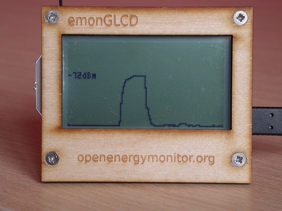
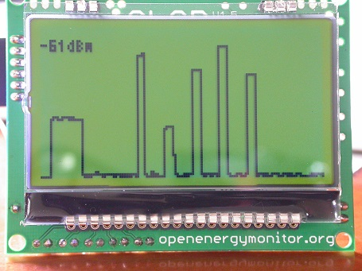
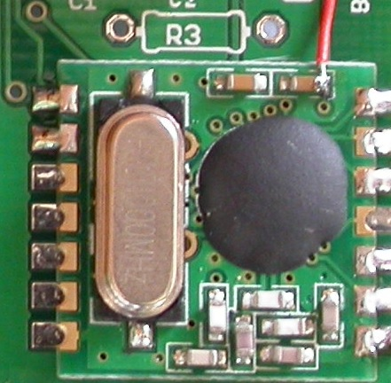
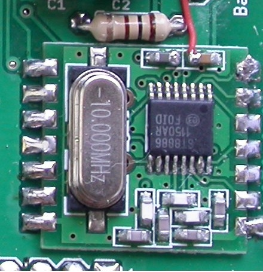
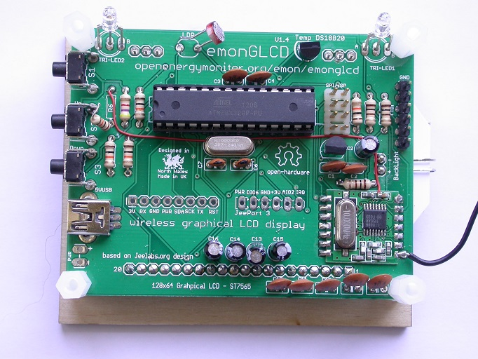
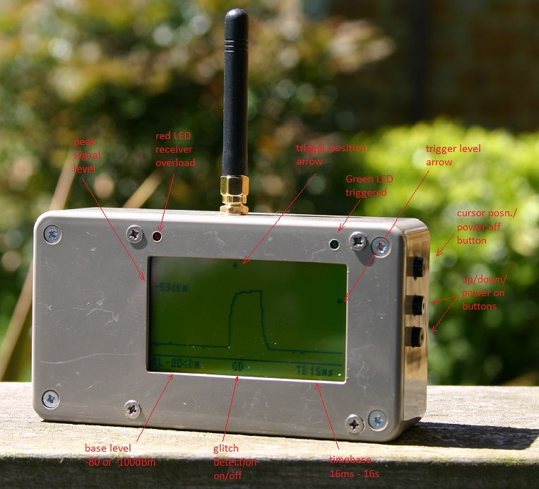

All the recent talk about aerials made me think it would be useful to have a signal strength meter to compare various options. The RFM12B has an analogue signal strength output which can be accessed (if you are prepared to solder a wire onto the module) and a quick Google reveals that quite a few people have used this feature to build various monitors and scanners.
The downside of most, if not all, of these is that they require a host computer for display which isn't great when you want to wander around the house sniffing out RF. The emonGLCD seems like a much better platform since it has both an RFM12B and an LCD display, so I had a quick play to see how well it could work.
Here's a snapshot of my first attempt showing an emonTx transmission...

and here's another one showing a transmission clash, I think this is OOK from my weather station...

It's very simple at the moment but there's a lot of potential in this as all sorts of features could be added, like triggering on a particular node ID. The code isn't really in a state to share yet but I'll keep playing with it and if there is sufficient interest I'll upload it when I'm happy with it.
Edit: build instructions and sketch are now included further down in this thread
Re: emonGLCD as an RF signal strength meter
Ooooo - I like that!
Re: emonGLCD as an RF signal strength meter
That looks really tidy, I like it.
Re: emonGLCD as an RF signal strength meter
Wow yes that is nice!
Re: emonGLCD as an RF signal strength meter
Yes, VERY handy! I definitely could use that, as my base and GLCD nodes are about 30 metres apart, with several walls and other large objects between them. Nice hack!
Re: emonGLCD as an RF signal strength meter
What ingenuity! I like it too!
I feel another order to the shop coming on!
Re: emonGLCD as an RF signal strength meter
Thanks chaps. I think I'll need a variable timebase so you can see multiple transmissions so this is going to end up being a mini scope, which could be useful for other things too. Here's a burst from my system with a slower timebase...

This nicely shows all 6 nodes and the use of timeslots to avoid collisions. Also trying out a reflective display here that doesn't need a backlight.
Just need to do all the boring fiddly stuff now so you can set options via the pushbuttons etc.
Re: emonGLCD as an RF signal strength meter
Great idea Martin, sounds really useful for troubleshooting problems and improving system resilience.
For those of us without a GLCD, could this be also be integrated into emonBase so that it can be viewed via laptop/phone etc.
Paul
Re: emonGLCD as an RF signal strength meter
I suppose it could Paul, since the signal level will be available on any device equipped with an RFM12, but I see it's main use as a portable test box for trouble shooting and comparing aerials etc.
Re: emonGLCD as an RF signal strength meter
I've now got the code developed to the point where it's ready for others to try if they wish.
The following parameters can now be set via the 3 pushbuttons on the emonGLCD:
timebase (16 milliseconds to 16 seconds)
trigger level
trigger delay
attenuation 0 or 20dB
glitch detection on or off
Since there's a bit of interest I thought I might write a little "how to" guide. Not sure if it's best to do this on this thread, a new thread or somewhere else on the site though??
Re: emonGLCD as an RF signal strength meter
I suppose it could Paul, since the signal level will be available on any device equipped with an RFM12, but I see it's main use as a portable test box for trouble shooting and comparing aerials etc.
Would be very nice to put this onto a Jeelink and show the results on a laptop. I really need this :-) ........
Re: emonGLCD as an RF signal strength meter
I believe that's been done Jörg with a program called NRfMon but I couldn't make much sense of it when I tried - maybe you'll have more luck.
Re: emonGLCD as an RF signal strength meter
I thought I should finish documenting this project before I forget how it works!
Firstly the hardware modifications required to gain access to the RFM12B receive signal strength signal....
This signal is not available via the RFM12B pins so it is necessary to connect a wire to a capacitor on the circuit board. There are 2 versions of the RFM12B, one has a "properly" packaged IC, the other just has a black blob covering the bare chip. The position of the wire is slightly different depending on which version you have...


The signal needs to be connected to an analogue input but there aren't any free inputs available on the emonGLCD so something has to be sacrificed. The only non-essential function is the LDR, which adjusts the backlight brightness based on ambient light level, so we will use this input. First it is necessary to disconnect or remove the LDR and R6 and then connect the wire from the RFM12B to the top of R6, as shown here...

This is the only modification required to the emonGLCD. It will still run the standard sketches but it will be necessary to disable the automatic backlight brightness function or the brightness will vary with the received signal strength. Something like this...
replace: if ((hour > 22) || (hour < 5)) glcd.backLight(0); else glcd.backLight(LDRbacklight);
with: if ((hour > 22) || (hour < 5)) glcd.backLight(0); else glcd.backLight(200);
Re: emonGLCD as an RF signal strength meter
And now the software...
This is my prototype, I used separate red and green LEDs here because they are more useful in this application and I used a reflective LCD to improve battery life but the function is identical with a standard emonGLCD..

There are 5 settings which can be controlled via the 3 buttons:
Trigger level - this determines the minimum signal level required to trigger the display
Trigger position - this determines the position on the display of the signal that caused the trigger
Base level - this is the minimum signal level which can be displayed (-80 or -100dBm)
Glitch detector - with this on short signal pulses which could be missed by a normal scan will always be shown
Timebase - this determines the period of a complete scan across the screen (16ms-16s)
Pressing the top button cycles through these 5 settings and the currently selected item will flash. If the top button is held down for 2 seconds the unit will turn off.
The other 2 buttons change the value of the selected setting either up or down. Holding either button will cause the value to change rapidly. If the unit is turned off, pressing either of these buttons will turn it back on.
All settings are stored in EEPROM and will be restored when the unit is turned back on, even if the battery has been removed.
Just for completeness, here is the inside of the prototype unit...
and here's the sketch...
Re: emonGLCD as an RF signal strength meter
Martin - another lovely toy! Thank you.
As usual I fell at the first hurdle. This: #include <avr/sleep.h> led me on an interesting path which became too much so maybe you could post a link to a library file?
I like the user profile photo.
Brian
Re: emonGLCD as an RF signal strength meter
That's strange Brian, I thought it was part of the standard Arduino installation.
The file should be located under your Arduino installation directory, e.g. for me it's..
C:\arduino-1.0.1\hardware\tools\avr\avr\include\avr\sleep.h
I don't think I installed it seperately.
I like the user profile photo. - I copied your idea :)
-martin
Re: emonGLCD as an RF signal strength meter
Hmm - I have that structure and the file sleep.h
This is the error:
GLCD_SSM.ino: In function 'void powerDown()':
GLCD_SSM:518: error: 'sleep_bod_disable' was not declared in this scope
Re: emonGLCD as an RF signal strength meter
even stranger, sleep_bod_disable() is defined in my version of sleep.h. Are you using a different Arduino version?
If you just want to try the sketch you can comment that line out as all it does is disable brown-out detection to minimise current when in sleep mode.
Anyone else know a bit more about these include files?
Re: emonGLCD as an RF signal strength meter
Ok thanks. It
compliescompiles with that line commented out.The Arduino version is 1.03
Re: emonGLCD as an RF signal strength meter
I just checked version 1.0 and sleep_bod_disable() isn't in there Brian so maybe you should install a newer toolset. I think the current version is 1.0.5
Re: emonGLCD as an RF signal strength meter
oops, a bit slow there. They must have taken the function out again then - weird!
Re: emonGLCD as an RF signal strength meter
I think I've worked out what's going on here Brian. At some point I updated my AVR tool chain because the one supplied with the Arduino package is out of date. The sleep_bod_disable() function is in the updated toolset but not in the Arduino version. Even the latest version 1.0.5 of the Arduino package uses the old AVR tools.
It's easy enough to write a little macro to replace this function but in the meantime just commenting the line out is fine, especially if you are not running from batteries.
Re: emonGLCD as an RF signal strength meter
I've now updated the sketch to include it's own sleep_bod_disable() macro, version is now 1.01
Re: emonGLCD as an RF signal strength meter
Martin,
You're code is amazing. What a great little tool. That said, I am having a little trouble getting the most out of it's for troubleshooting my system. Do you think you could provide some guidance as to suggested operation?
What does GD do? What is a good timescale to start at for monitoring these RFM12B signals? And what is a level of reception that should provide mostly reliable communication?
Specifically I am trying to figure out if reception is a part of my problem. I have a emonBase that sometime isn't updating from my tx as often as it should. Thanks.
Re: emonGLCD as an RF signal strength meter
I'm pleased to hear you are getting some use out of this Mark.
GD (Glitch Detect) can be used to ensure that nothing is missed when using slow timebases. For example, with an 8 second timebase and only 128 pixels on the screen the samples would be 62.5ms apart. With simple sampling every 62.5ms a lot of detail, or even complete transmissions could be missed.
With GD on sampling is done at high speed so there are many samples for each screen pixel. The value displayed on the screen is the largest of all the samples received since the last displayed pixel. This way nothing should be missed.
The timebase really depends on what you are trying to do. If you just want to see the amplitude, and maybe the width, of a transmitted pulse then use a short timebase with the trigger centered so that the pulse nearly fills the screen. If, on the otherhand, you are looking to see if there is anything interfering with the transmission then a timebase greater the the time between transmissions, GD on and the trigger near the left hand side of the screen may be best.
Re: emonGLCD as an RF signal strength meter
Hi Martin,
Just came across this thread. Fantastic development, the new version look very nice. Would you mind if I put your sketch up on the emonGLCD GitHub? https://github.com/openenergymonitor/emonglcd and created a blog post about this development? We will give you full credit for the development, we would love you to write the blog post yourself if you fancy?
Keep up the good work.
Cheers,
Re: emonGLCD as an RF signal strength meter
Yes, that's fine by me Glyn.
It's probably best if you do the words but let me know if there's something that needs explaining that I haven't covered in this thread.
-martin
Re: emonGLCD as an RF signal strength meter
Blog post is up! Let me know if you want me to add of modify something:
http://openenergymonitor.blogspot.com/2013/08/emonglcd-433-868-mhz-rf-scanner-signal.html
Fantastic bit of development.
Re: emonGLCD as an RF signal strength meter
Looks good - thanks Glyn
Re: emonGLCD as an RF signal strength meter
Just a naive question: why do we need to use the same ADC input as the LDR. Couldn't we just use ADC2 (connected to the Jeeport on AIO) ?
Do I miss something ?
Thanks
Re: emonGLCD as an RF signal strength meter
ADC2 is used for the middle push button
Re: emonGLCD as an RF signal strength meter
Hi Martin I have only just come to this thread but this is a great bit of kit!
Worked out of the box with my new GLCD!
As a novice programmer I wondered if you could help me add the function of "Trigger by node ID" that you mentioned? This would be really useful for optimizing my setup
Regards
Richard
Re: emonGLCD as an RF signal strength meter
Martin comes here only occasionally now, so you might need to wait a while for him to see this.
(It should be even easier with a '69 RF module, as that says it reports signal strength so should not need the wiring mod.)